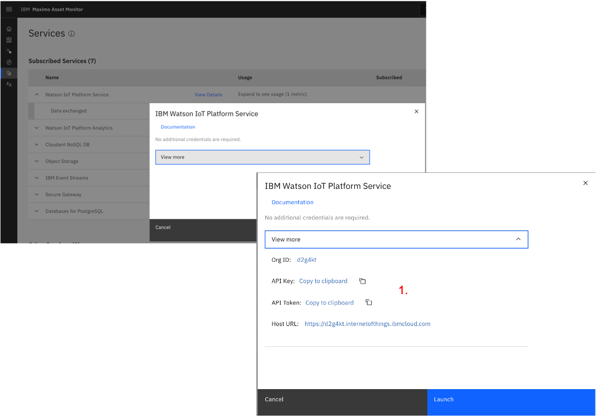
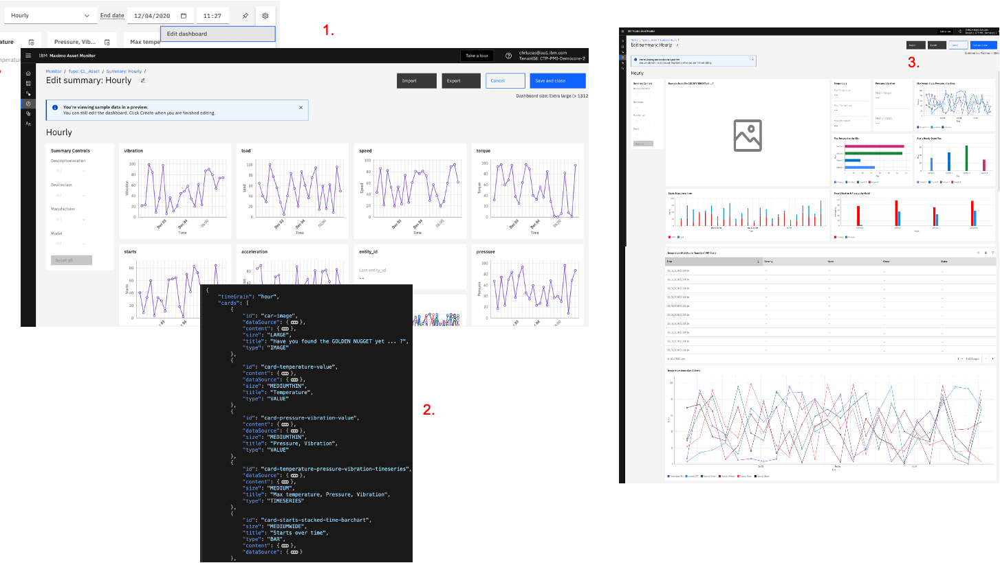

(Extras & Archive)
Use Monitor API to change Dimensions and load a Picture
In the next section, we'll explain how to update and customize the initial Dashboard that we created earlier.
Prior to that, we are going to use Monitor's API to:
(a)change the CL_Asset_1_2_3 Metadata values in the Watson IoT
platform so we can later see how Dashboards can be 'filtered' on those metadata values (called Dimensions on Monitor side),
(b) add an image and tie it to the CL_Asset Entity Type so we can display it on the dashboard.
We will be using Postman to do this.
-
In Monitor's left menu, click the Services menu. On the Watson IoT Platform Service row, click
View DetailsthenView More. Next to the API Key, clickCopy to clipboard- paste this into your favourite notepad for future retrieval. Next to the API Token, clickCopy to clipboard- paste this into your favourite notepad for future retrieval.  -
In Postman, click
Create New Request. In Select a collection or folder to save to, clickCreate Collection, name itAPM Labs. Name your RequestPOST Dimensions to CL_Asset_1. ClickSave to APM Labs. - Open the Request, and change its (default) Type from GET to POST.
- On the Authorization tab, leave the default Type to inherit auth from parent. Next to the POST field, enter this value:
https://api-{{geo_country_code}}.connectedproducts.internetofthings.ibmcloud.com/api/images/v1/{{tenantID}}/entityType/CL_Asset/dimensionalwhere you will first need to: (a) replace{{geo_country_code}}with your specific country code (your country code is in the beginning of your Monitor Dashboard URL:https://dashboard-{{geo_country_code}}), i.e. to eitherus,uk,de, orbeta(b) replace{{tenantID}}with your Monitor Tenant ID which you can find in the top right corner of your Monitor webpage underneath your IBMiD. An example of that string (which is the one used for these Labs) can be found below. - On the Headers tab, in the Key and Value columns, enter the following 3 rows
(a) Key =
Content-Typeand Value =application/json, (b) Key =x-api-keyand Value =Write the 'API Key' you fetched in step 1., (c) Key =x-api-tokenand Value =Write the 'Authentication Token' you fetched in step 1., - On the Body tab, click the
rawtick-box and enter the below .json snippet. ClickSend. You should get a returned result as per picture below. - Repeat steps 2. to 6. for (a)
CL_Asset_2where you enter for the descriptiveLocation:"value" : "Melbourne"and for model:Model_B, (b)CL_Asset_2where you enter for the descriptiveLocation:"value" : "Sydney"and for model:Model_B.
Example of the string to be used in Postman 'POST Dimensions to CL_Asset_1' call:
https://api-us.connectedproducts.internetofthings.ibmcloud.com/api/master/v1/CTP-PMI-Democore-2/entity/type/CL_Asset/dimensional
[
{
"id": "CL_Asset_1",
"name" : "descriptiveLocation",
"type" : "LITERAL",
"value" : "Perth"
},
{
"id": "CL_Asset_1",
"name" : "model",
"type" : "LITERAL",
"value" : "Model_A"
}
]

Let's now check that our changes worked ! There are several ways we can do that:
- Go to the Monitor left menu. Search for and open
CL_Asset. Watch the updated values fordescriptiveLocationandmodelfields for the 3 Assets. - Go to the
Datatab, in theDimensionssection, selectModelthendescriptiveLocationand watch !
We are now going to use another API call to upload a picture to the system. This picture will be used in the final 10. Update your Summary Dashboard.
- Create a new
POST Image to CL_Asset EntityTypeRequest in Postman, make it of POST type. - Next to the POST field, enter this value:
https://api-{{geo_country_code}}.connectedproducts.internetofthings.ibmcloud.com/api/images/v1/{{tenantID}}/entityType/CL_Assetafter having replaced{{geo_country_code}}and{{tenantID}}with your values (see below for the sample string used for this lab). - On the Authorization tab, leave the default Type to inherit auth from parent.
On the Headers tab, in the Key and Value columns, enter the 2 rows
x-api-keyandx-api-tokenas you did previously (no need for theContent-Type/application/jsonrow here). - Download this image Image and save it as
CL_Asset.jpgon your computer. - On the Body tab, select the
form-datatick-box. Enter enter the following 3 rows: (a) Key =imagefilecontent, selectFileon the right of the box. That will populate theValuecolumn with aChoose Filesbutton. Click it and select yourCL_Asset.jpg. (b) Key =imageidand Value =CL_Asset(c) Key =tagsand Value =CL_Asset. ClickSend, observe the returned"message": "success"body.
{kind=link}
Example of the string to be used in Postman 'POST Image to CL_Asset EntityType' call:
https://api-us.connectedproducts.internetofthings.ibmcloud.com/api/images/v1/CTP-PMI-Democore-2/entityType/CL_Asset

[ARCHIVE] Update your Summary Dashboard
[This section was created before the new MONITOR Dashboard Visual Editing Features of 2021, when JSON edition was required.]
In this final 'Monitor Lab' section, we are going to bring everything together and show how you can create and customise dashboards to - literally - visualise whatever you want from all the data we generated so far.
Remember 2. Create an Hourly Summary Dashboard section ? We then created the simplest, out-of-the-box, Hourly dashboard. In this section, we will (a) understand the .json file structure and card elements that make up dashboards, (b) create an advanced dashboard using most of the cards possibilities. Note that this will imply .json file editing and we therefore recommend a cool json editing tool that should at least provide the ability to collapse .json file levels for better visibility and easier navigation - we used the free version of BBEdit here.
-
Open the CL_Asset Hourly dashboard. Top-right, click
Edit Dashboard, thenExport. Your browser will automatically download a .json file called Hourly-dashboard.json. For your reference, you can also find that original .json here: Hourly-dashboard-ORIGINAL.json.
-
Let's have a look at the main elements of that .json file. In your .json editor,
Collapse Folds below Level 2. This shows the main elements of the file, i.e. :timeGrain,cards,title,layouts. - In your .json editor,
Collapse Folds below Level 3. Note that you have 9cards- one for each of the graphs you see on the dashboard. Note that each card has several sub-sections, includingid(must be unique),dataSource(this where you define what data item(s) you want to display on the card),content(this is where you define the labels of your card),size,titleandtype(note all cards are presently of type TIMESERIES, we'll soon see other types). - In your .json editor,
Collapse Folds below Level 4. Let's focus on the most complex card, i.e. the one displayingtemperatureIoT readings for which we earlier definedmean,max,min,std,count,sumdata items. In thedataSourcesection, note (a) theattributessub-sections (1 for each above data item), (b) therangesection where we define the defaultcountandintervalof the card, (c) thetimeGrain. In thecontentsection, we define the labels of the card - note that each attribute defined in the attributes section MUST have a corresponding dataSourceID in the content-series.
OK, that should be enough to understand at a high-level how dashboards work. Go through this Dashboard JSON Reference documentation to see all that can be done with dashboards, i.e. what types of cards you can add (value card, table card, bar chart card, image card etc), how to change the layout etc. This Tutorial (which will show you how to customize a dashboard) is just 1 out of 7 tutorials which will help you master dashboarding.
As a final exercise, let's now create an advanced dashboard which will incorporate most of the card types
(i.e. BAR, TIMESERIES, ALERT, IMAGE, VALUE) and dashboarding capabilities.
- Open the CL_Asset
Hourlydashboard. Top-right, clickEdit dashboard. - Save this Hourly-dashboard-CUSTOM.json file to your computer.
- Click
Import, select the just-saved Hourly-dashboard-CUSTOM.json. You now have a preview of what your new dashboard will look like. The json provided will work if you followed the naming conventions throughout the labs, as all dataSourceId (like e.g.temperature,pressure_Hourly_meanetc) are pretty straightforward and did not involve your initials. Note that if you have any error while saving, check the error message which is usually helpful by providing you with a specific problematic data item name which you should then search within the .json. Likely causes of errors you might encounter will be related to how you named data items - e.g. if you named the picture XY_Asset.jpg instead of CL_Asset.jpg. 
This picture shows what your final dashboard should look like.
Congratulations, you made it - hope you enjoyed this lab !